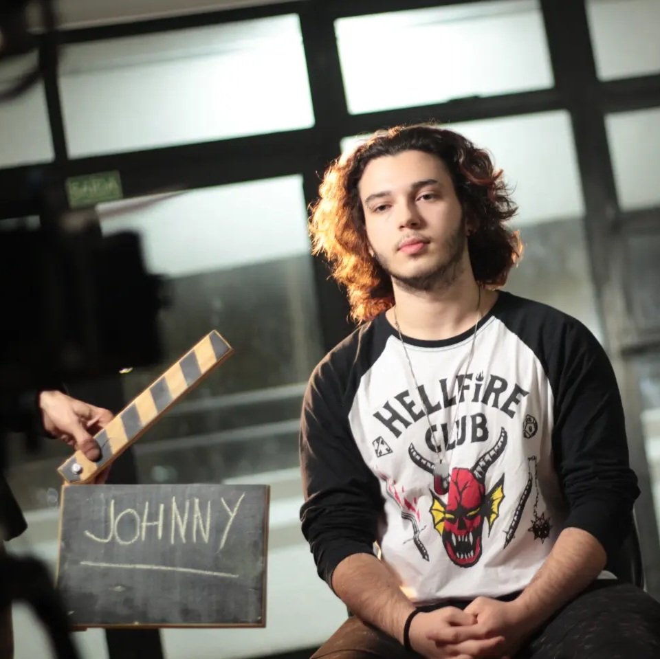

João Luís Anzolin Oliveira
Estagiário de Mídias Sociais
Muito prazer, pode me chamar de Johnny! Tenho 22 anos e moro na Zona Norte de São Paulo. Sou estudante de Produção Multimídia no Centro Universitário Senac - Santo Amaro e tenho experiência em áreas como: produção e edição de imagens/vídeos, gerenciamento de redes sociais, design, atendimento ao público e produção de eventos. Gosto de aprender e colocar meus conhecimentos em prática, então acredito que minha dedicação e comprometimento são características que agregam valor ao meu trabalho. Além disso, prezo por ambientes bem estruturados e com regras claras, portanto, sou metódico ao receber uma tarefa e busco realizá-la de forma precisa e atenta aos detalhes.
Apresentação
Sobre Mim
- Nascido na região do ABC Paulista e filho de artistas, cresci em um ambiente fortemente ligado à expressão cultural, com influências do teatro, da música e das artes em geral.
- Durante a adolescência, descobri no cinema uma grande paixão, que ampliou meu interesse pelo audiovisual e se somou aos meus gostos por cultura pop, games, rock e tecnologia (o famoso “geek”...).
- Com experiências em atuação e em instrumentos (como violão, teclado e guitarra), encontrei na Produção Multimídia um campo que integra esses diferentes interesses que fazem parte da minha trajetória, permitindo unir criatividade e comunicação em um mesmo universo.
Objetivos Profissionais
- Tenho como objetivo seguir construindo minha trajetória profissional na área de Produção Multimídia, com foco especial no audiovisual e na gestão de projetos.
- Busco atuar no desenvolvimento, planejamento e execução de produções que unam comunicação, arte e tecnologia, transformando ideias em experiências relevantes
- Meu interesse está em criar e colaborar em projetos que valorizem e utilizem a arte como ferramenta de expressão criativa e conexão, contribuindo para que diferentes histórias, visões e perspectivas possam ser compartilhadas por meio das multimídias.
Formação Acadêmica
Produção Multimídia
Centro Universitário Senac - Santo Amaro
3º semestre
Ensino Médio
Colégio Fundação Santo André
Cursos realizados
Formação em Cinema e Audiovisual
Escola Livre de Cinema e Vídeo de Santo André (ELCV)
Curso de Teatro (Mod. 1 e 2)
Cia. do Nó
Habilidades
Competências Técnicas
- Operação de câmeras digitais e equipamentos de áudio/vídeo
- Edição de Vídeo
- Design
- Gestão de Redes Sociais
- Inteligência Artificial
- Inglês Intermediário
Competências Interpessoais
- Organização
- Comunicação Interpessoal e Assertiva
- Perfil Analítico
- Rápido Aprendizado
- Liderança
- Responsabilidade
- Trabalho em Equipe
- Criatividade
- Prestatividade
Ferramentas e Tecnologias
- DaVinci Resolve
- CapCut
- Adobe Illustrator
- Canva
- Figma
- ChatGPT
- Gemini
- Claude
- Google Workspace
Portfólio de projetos
Arraste para o lado ou use as setas para navegar
Projeto Integrador • 2º Semestre SENAC
Site desenvolvido como um pequeno acervo digital sobre a cultura de povos originários do Brasil, com navegação baseada em um mapa interativo entre as regiões do país.
Projeto Integrador • 1º Semestre SENAC
Peça gráfica conceitual que utiliza a metáfora de um medicamento para provocar reflexões sobre o consumo superficial de informação na era digital.
Curta-metragem • ELCV
Filme produzido em apenas 72 horas para a Noite de Kino 2024, reunindo estudantes de cinema em um desafio de criação audiovisual intensiva.
Projeto Gráfico
Série de cartões-postais que exploram a interpretação visual de uma música, transformando elementos sonoros em composições gráficas por meio de cor, forma e referências.
Pôster de visualização de dados experimental
Projeto desenvolvido a partir de pesquisa histórica sobre o cinema como mídia, representando suas conexões, influências e transformações desde o surgimento até a contemporaneidade.
Exercício semiótica
Vídeo desenvolvido a partir de uma poesia autoral, explorando diferentes formas de construir significado por meio da imagem, do som e expressão visual.
Exercícios práticos • Instituto CRIAR
Captações realizadas para o estudo prático de operação de câmeras e direção de fotografia, utilizando equipamentos profissionais e o estúdio da instituição.